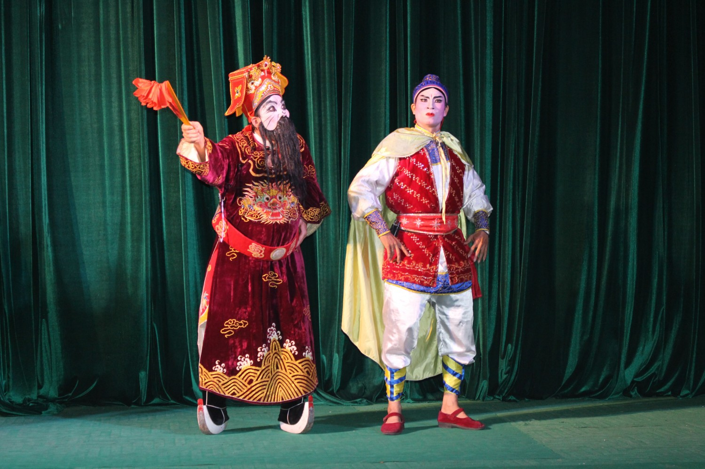

MÔ HÌNH NỊNH
Là nhân vật nam thuộc phe phản diện; thường mặt trắng mốc, râu rìa. Mô hình nịnh cấp 2 gồm:
Nịnh gốc: Mang tất cả đặc điểm chung của mô hình nịnh; đã có phe cánh vững mạnh. Ví dụ: Tạ Thiên Lăng (San Hậu).
Nịnh mụt: Cũng mang tất cả đặc điểm chung của mô hình nịnh; song chưa có phe cánh vững mạnh. Ví dụ: Vưu Hồn, Bí Trọng (Bá Ấp Khảo). Tuy có sự phân hóa, nhưng hai nhánh mô hình nịnh này có kỹ thuật biểu hiện không khác nhau mấy về tạo hình, chỉ phân biệt rõ ràng theo phong thái. Nếu như nịnh gốc thường có thái độ ngông nghênh, xem thường tất cả thì nịnh mụt chỉ bộc lộ phong thái hèn hạ, a dua, bợ đỡ.
Cảnh trong tuồng "Phụng Kỳ soán đế" Ảnh: Hoàng Dũng
MÔ HÌNH TƯỚNG – YÊU ĐẠO
So với các mô hình khác, mô hình tướng và yêu đạo (hay còn gọi là mô hình thầy rùa) là các mô hình nhân vật phản ánh đậm đà đặc trưng khoa sức của nghệ thuật hát bội từ kỹ thuật hát – nói, hóa trang đến vũ đạo. Điều đó làm cho khán giả, người thưởng thức đặt sự quan tâm nhiều đến các mô hình này.
Mô hình tướng
Đặc điểm chung: Mô hình tướng là mô hình nhân vật tiếp nhận một cơ số những đặc điểm về phong thái, hành động và vũ đạo của kép mang thuộc tính võ: Oai vệ, nhanh nhẹn; hát – nói có lực mạnh. Tuy nhiên, điểm đáng chú ý là hóa trang mặt của mô hình tướng là hóa trang kiểu “mặt nạ”, rất đa dạng và phong phú các hình thức biểu hiện theo lối tượng trưng, cách điệu. Tùy vào vai trò trong vở diễn chúng ta có tướng chính diện (tướng thuộc phe lương thiện, trung nghĩa) như Trịnh Ân (Trảm Trịnh Ân), Hoàng Phi Hổ (Bá Ấp Khảo), v.v.; và tướng phản diện (tướng thuộc phe ác, bất nghĩa) như Tạ Ôn Đình (San Hậu), Từ Hải Thọ (Gia hình loạn tướng), Ô Lợi Hắc (Thần Nữ dâng Ngũ linh kỳ), v.v..

Quan Vũ nhân vật chính diện có sự kết hợp giữa hai mô hình “kép đỏ” và “tướng”
MÔ HÌNH YÊU ĐẠO (THẦY RÙA)
Đặc điểm chung: Cũng giống như mô hình tướng, mô hình yêu đạo bao chứa nhiều đặc thù “khoa sức” của nghệ thuật hát bội. Tuy nhiên, yêu đạo thường được quan niệm là kiểu nhân vật phản diện, mang tính chất đối lập với những nhân vật chính diện, thừa hành chính nghĩa, công lý chiểu theo ý thức hệ phong kiến. Thêm nữa, những nhân vật này thường có gốc gác là các loài cầm thú tu luyện thành người nên hành động, phong thái cũng mô phỏng sâu sắc các loài vật. Hóa trang nhân vật vì lẽ đó cũng là một bản gợi ý những cách điệu, tượng trưng cho lai lịch của nhân vật. Ví dụ như Dư Hồng (Lưu Kim Đính giải giá Thọ Châu) nguyên là chim hồng nhạn tu luyện thành người nên họa tiết tròng mắt cũng mô phỏng motif hình chim, màu nền mặt là màu đỏ. Tạo hình nhân vật yêu đạo/thầy rùa thường dùng mắt thau để diễn tả mắt lộ kỳ quái, bụng to để chứa đựng phép mầu (nên con gọi là bụng phép), và phục trang mô phỏng cách ăn mặc của đạo sĩ Đạo giáo.
Nhân vật Phàm Diệm. Diễn viên: Hoàng Tuấn
————